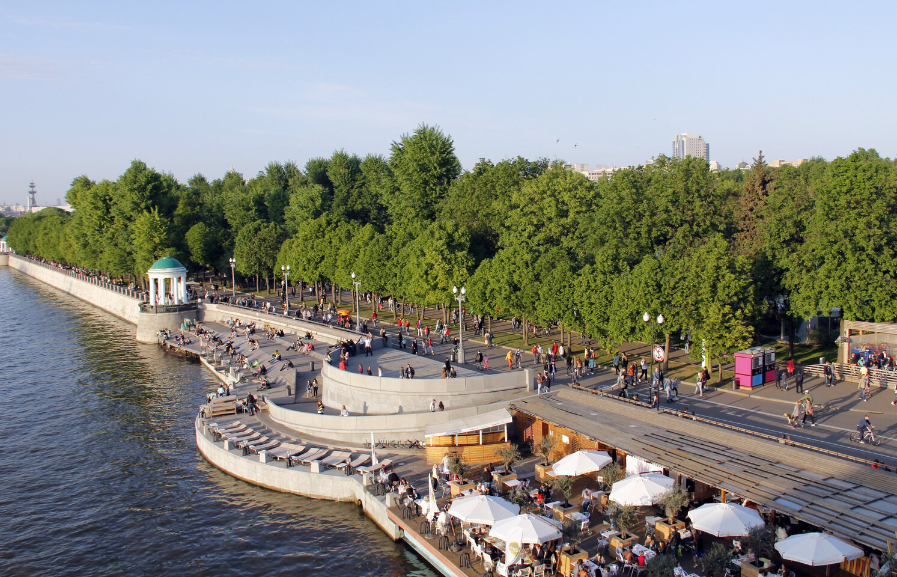

Самый популярный парк Москвы. На территории в 119 гектаров каждый найдет чем себя занять, будь то романтическая встреча или семейный отдых с детьми или прогулки с друзьями: занятия спортом, обучение, развлечения, еда, экскурсии, летний кинотеатр, выставки и масса всего интересного ждет вас в Парке Горького.
Находится: Москва, ул. Крымский Вал, 9, м. Октябрьская Грандиозная зона отдыха открылась в самом сердце России в 2017 г. ко дню города Москвы. Уникальный парк, во всех отношениях, раскинулся на территории в 12 га и сочетает в себе 4 характерные для России ландшафтные зоны: тундра, степь, лес, болота. В каждой части этого великолепия своя температура. Да-да, именно своя, вне зависимости от времени года. Зимой плюсовая температура, а летом –минусовая. Для каждой зоны предусмотрен свой мини-зоопарк. Это прекрасная возможность узнать больше о нашей стране, не выезжая за пределы Бульварного кольца. Над Москвой-рекой появился парящий мост длиною 70 метров и одна из лучших смотровых площадок столицы. Отсюда можно увидеть практически весь центр Москвы, во всех деталях рассмотреть Кремль и его окрестности.
Находится: Москва, Парк Зарядье, м. Китай-ГородЕдва ли найдется житель столицы, который не бывал на Поклонной горе. Всеми узнаваемый Обелиск, устремившийся в высь на 141.8 метра (каждый дециметр символизирует один день войны), ставший самым высоким монументом России. Он украшает парк, который является неотъемлемой частью мемориального комплекса Центрального музея Великой Отечественной войны 1941-1945 гг.
Находится: Москва, ул. Братьев Фонченко, д. 7, м. Парк ПобедыНескучный сад – это самый старый сквер Москвы, который расположился на правом берегу Москвы-реки. Он является пейзажной частью Центрального Парка Культуры и Отдыха имени Горького. Это одна из наиболее значимых достопримечательностей исторического центра столицы. Парк занимает более 59 гектаров между Третьим транспортным кольцом и Зеленым театром.
Находится: Москва, пр-т Ленинский, 14-20